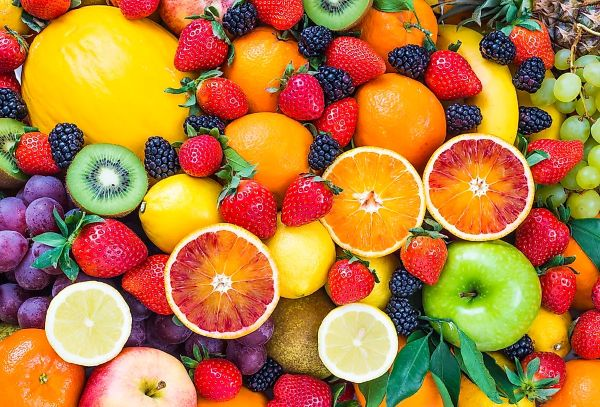

What is a Fruit?
Botanists classify fruits and vegetables based on the part of the plant that they come from. A fruit develops from the flower of a plant, while the other parts (non-reproductive) of the plant are categorized as vegetables. Or they say a fruit is the fleshy (or dry) ripened ovary of a flowering plant, enclosing the seed or seeds. Everybody knows that tomatoes are fruits. If you deign to call your tomatoes vegetables, someone will likely feel a need to correct you, but there are quite a few other foods that are actually fruits. Botanically, cucumbers, eggplant, most nuts, pumpkins, and squash are fruits too!
Types of Fruits
- Berries: These little flavor morsels are often small, round, and packed with antioxidants. Examples include strawberries, blueberries, raspberries, and blackberries.
- Citrus Fruits: Known for their tangy and refreshing qualities, citrus fruits are a zesty delight. Oranges, lemons, limes, and grapefruits fall into this category.
- Tropical Fruits: Hailing from warmer climates, tropical fruits offer a taste of paradise with their sweet and exotic flavors. Think mangoes, pineapples, papayas, and bananas.
- Stone Fruits: Named after their large, hard pits or “stones,” these fruits are both juicy and delectable. Peaches, plums, cherries, and apricots belong to this group.
- Melons: Perfectly hydrating and subtly sweet, melons are a summertime favorite. Watermelons, cantaloupes, and honeydews are some of the most popular varieties.
- Drupes: Often mistaken for nuts, drupes have a hard shell surrounding a seed. Examples include peaches, plums, and cherries.
Most Popular Fruits In The World
- Bananas - 115.74 Million Metric Tons
- Watermelons - 103.97 Million Metric Tons
- Apples - 86.14 Million Metric Tons
- Oranges - 75.54 Million Metric Tons
- Mangoes - over 40 Million Metric Tons
Know more about variety of fruits Visit here